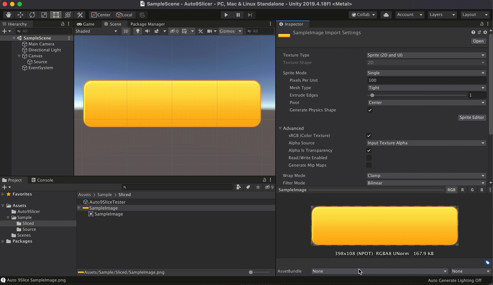
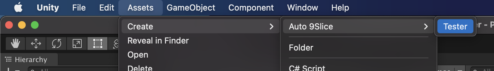
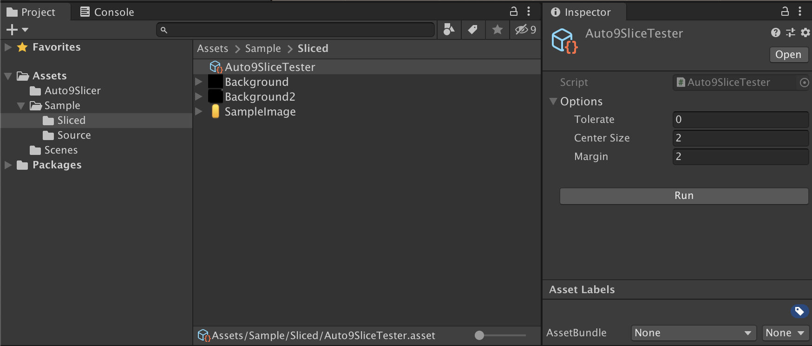

Auto 9 slice sprite generator on Unity.

Create Auto9SliceTester. Assets > Create > Auto 9Slice > Tester

Click `Run` to automatically slice the images in the same directory.

Add it to your EditorScript so that it will be executed at your desired timing.
var slicedTexture = Auto9Slicer.Slicer.Slice(texture, SliceOptions.Default);
textureImporter.spriteBorder = slicedTexture.Border.ToVector4();
File.WriteAllBytes(filePath, slicedTexture.Texture.EncodeToPNG());
Are you enjoying save time?
Buy me a coffee if you love my code!
https://www.buymeacoffee.com/kyubuns
I'd be happy to receive reports like "I used it for this game!"
Please contact me by email, twitter or any other means.
(reporting is NOT mandatory.)